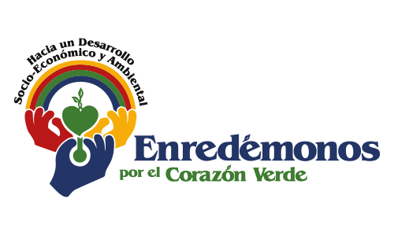
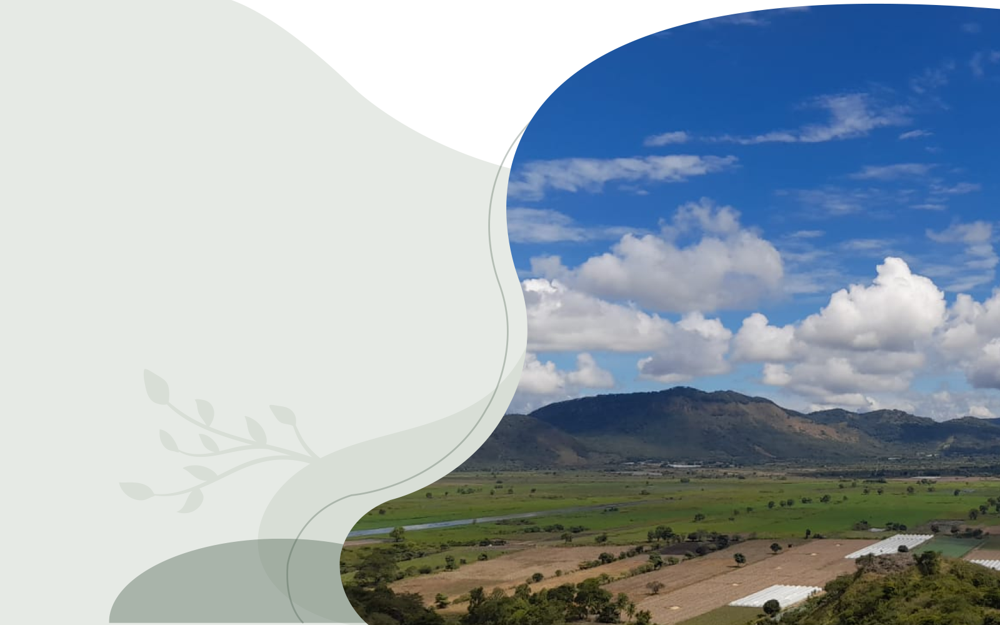
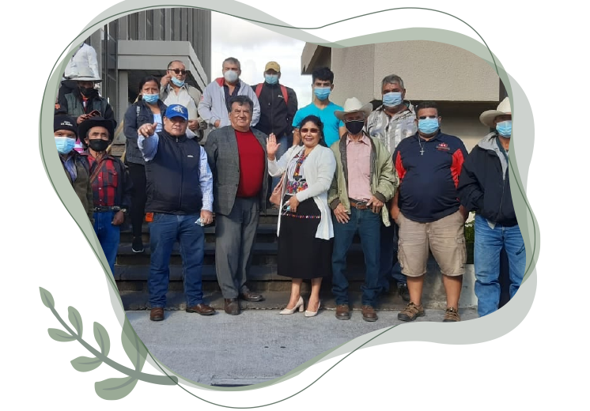
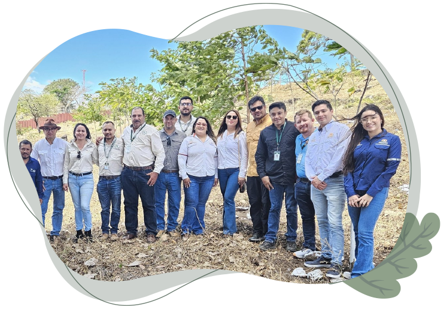

Es un Equipo de Organizaciones Multiétnicas, Multiculturales y Multisectoriales, de Líderes y Liderezas hacia un Desarrollo Integral Socio- Económico y Ambiental Sostenible, para Fortalecer, Promover, Gestionar e Incidir en la Diversidad de Atractivos Turísticos, la Riqueza Cultural y Ambiental.
CALMECAC
Es un equipo de organizaciones multiétnicas, multiculturales y multisectoriales hacia un desarrollo local integral socio-económico y ambiental sostenible, para promover la conservación de la biodiversidad, la comercialización e intercambio, para mejorar la calidad de vida, conjuntamente de con la participación de todas
las autoridades y sectores, para el beneficio de la sociedad civil presentes y futuras generaciones de las comunidades de la región de Alta Verapaz, Baja Verapaz, Quiché y Huehuetenango.

Ser una red líder con un reconocimiento y un posicionamiento sólido a nivel nacional e internacional, con un desarrollo humano equitativo, justo, integral y sostenible; promoviendo la conservación de la biodiversidad y la calidad en nuestros productos y servicios para su comercialización en mercados nacionales e internacionales con el fin de obtener el máximo crecimiento y desarrollo socio-económico y ambiental de la región de Alta Verapaz, Baja Verapaz, Quiché y Huehuetenango.